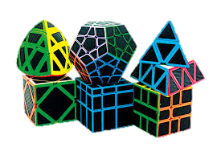
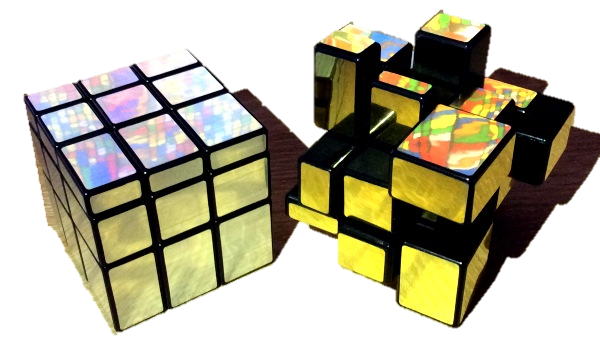
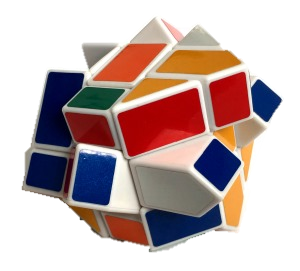

Desde su lanzamiento al mercado no a dejado de modificarse, a tal grado de llegar a los modelos que se muestranen en la siguiente imagen (todos pueden armarse).

CUBO MIRROR
Este tipo de cubo es probablemente la modificación de 3x3 más popular. Pegatinas reflectantes doradas o plateadas cubren las piezas de este cubo que se deforma. Mientras que en un clasico cubo de rubik seis colores marcan el estado resuelto, en este caso lo marcan las formas y alturas. Una cara está resuelta cuando es plana y todas las piezas están a la misma altura sin que nada sobresalga. En la posición resuelta la distancia entre el núcleo del cubo y las caras particulares varía. Una vez que hayas encontrado dónde van las piezas tienes que resolverlo de la misma manera que el Cubo de Rubik. Hay Mirror Cubes del 2x2x2 y 4x4x4 también.

FISHER CUB
El fisher cub se hizo a mediados de los 80 por Tony Fisher y fue su primer puzle personalizado. Probablemente es la primera modificación de forma del Rubik, así que estamos hablando de todo un clásico. Tiene una forma de cubo perfecta pero básicamente es un cubo de Rubik torcido 45º alrededor de un eje central, haciendo que 4 aristas se conviertan en centros, 4 centros se conviertan en esquinas y así sucesivamente. Si puedes resolver el clasico 3x3 no tendrás problemas con este, solo presta atención a la paridad.

FISHER CUB
Un cubo de Rubik con forma de corazón puede ser un buen regalo por san Valentín para los cuberos más aficionados. En la foto se ve un YJ Heart Puzzle, de muy buena calidad, gira bastante suave y es barato (unos 5€) y no tiene ninguna pegatina en él. Lo único molesto de este puzle es la forma simétrica del corazón, es decir, que las piezas opuestas son tan similares en altura y forma que ni siquiera sabes si pones una pieza en el lugar correcto o no. ¡Casi se necesita un microscopio para distinguir las piezas de lo parecidas que son! Este pequeño detalle puede hacer que sea difícil disfrutarlo